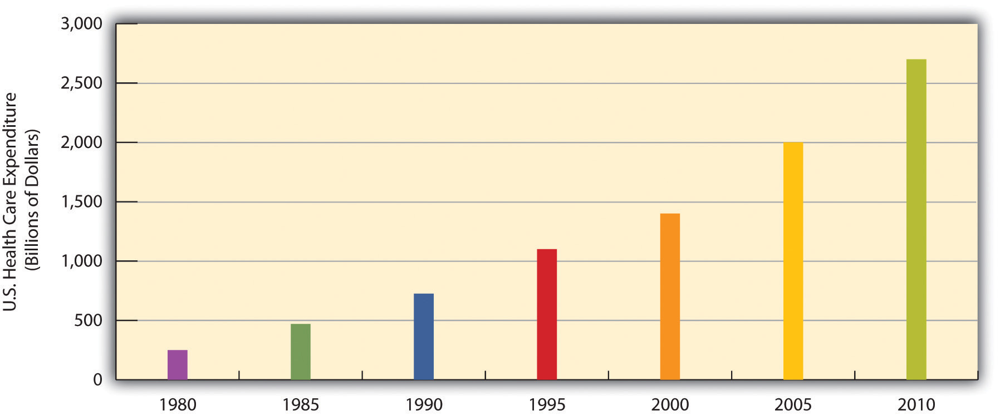
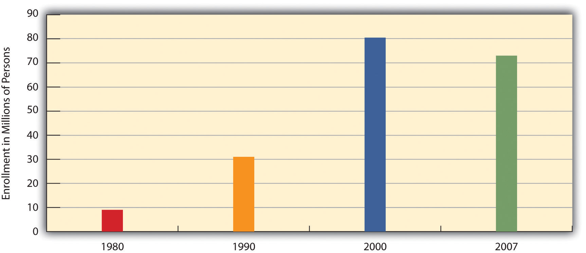

As the health-care debate in 2009 and 2010 illustrates, the practice of medicine in the United States raises many important issues about its cost and quality. Before we discuss some of these issues, a brief discussion of the history of medicine will sketch how we have reached our present situation (Louden, 1997; Porter, 2006).Louden, I. (1997). Western medicine: An illustrated history. Oxford, England: Oxford University Press; Porter, R. (Ed.). (2006). The Cambridge history of medicine (Rev. ed.). New York, NY: Cambridge University Press.
The practice of medicine today in the United States and much of the rest of the globe follows a scientific approach. But scientific medicine is a relatively recent development in the history of the world. Prehistoric societies attributed illness to angry gods or to evil spirits that took over someone’s body. The development of scientific medicine since then illustrates one of the sociological insights discussed at the beginning of this chapter: the type of society influences its beliefs about health and ways of healing.
The roots of today’s scientific medicine go back to the ancient civilizations in the Middle East, Asia, and Greece and Rome, which began to view health and illness somewhat more scientifically. In ancient Egypt, for example, physicians developed some medications, such as laxatives, that are still used, and they also made advances in the treating of wounds and other injuries. The ancient Chinese developed several drugs, including arsenic, sulfur, and opium, that are also still used. Ancient India developed anesthesia, antidotes for poisonous snakebites, and several surgical techniques including amputation and the draining of abscesses (Porter, 2006).Porter, R. (Ed.). (2006). The Cambridge history of medicine (Rev. ed.). New York, NY: Cambridge University Press. Ancient Greece built medical schools in which dissection of animals was used to help understand human anatomy. Later, a Greek physician named Galen, who lived in Rome during the 100s A.D., wrote influential treatises on inflammation, infectious disease, and the muscular and spinal cord systems. Medical advances continued in the Middle Ages and the Renaissance, as various physicians wrote about smallpox, measles, and other diseases, and several medical schools and hospitals were established. Leonardo da Vinci and other scientists performed many dissections and produced hundreds of drawings of human anatomy. Other major advances, including the development of surgical techniques and the treatment of burns, were also made during this period.
What is now called modern medicine began in the 1600s, as scientists learned how blood circulates through the body and used microscopes to discover various germs, including bacteria. By the end of the 1800s, the germ theory of disease had become widely accepted, thanks largely to the work of Louis Pasteur and other scientists. Other key developments during this time included the discovery of ether gas as an effective anesthesia and the realization that surgery needed to be carried out under the strictest standards of cleanliness (Porter, 2006).Porter, R. (Ed.). (2006). The Cambridge history of medicine (Rev. ed.). New York, NY: Cambridge University Press. During the 1800s, the American Medical Association and other professional associations of physicians were founded to advance medical knowledge and standards and to help give physicians a monopoly over the practice of medicine (Starr, 1982).Starr, P. (1982). The social transformation of American medicine. New York, NY: Basic Books. In the early 1900s, scientists learned about the importance of vitamins, and penicillin was developed as the first antibiotic. Developments in immunology, physiology, and many other areas of medicine have advanced far beyond what we knew a century ago and remain too numerous and complex to discuss here.

Modern medicine began during the 17th century with the discovery by English physician William Harvey of how blood circulates through the body.
Scientific medicine has saved countless lives: life spans used to average no more than the age of 40 or so, as we have seen, but in industrial nations now average well into the 70s. Still, as we have also seen, huge disparities remain across the world today in life spans and the quality of health. Disparities also exist in the quality of health care across the world. In the United States, questions about the cost and effectiveness of health care have dominated the news. We now turn to some of these issues.
Medicine in the United States is big business. Expenditures for health care, health research, and other health items and services have risen sharply in recent years, having increased tenfold since 1980, and now costs the nation more than $2.6 trillion annually (see Figure 18.6 "U.S. Health-Care Expenditure, 1980–2010 (in Billions of Dollars)"). This translates to the largest figure per capita in the industrial world. Despite this expenditure, the United States lags behind many other industrial nations in several important health indicators, as we have already seen. Why is this so?
Figure 18.6 U.S. Health-Care Expenditure, 1980–2010 (in Billions of Dollars)
Source: Data from U.S. Census Bureau. (2010). Statistical abstract of the United States: 2010. Washington, DC: U.S. Government Printing Office. Retrieved from http://www.census.gov/compendia/statab.
As discussed earlier, other Western nations have national systems of health care and health insurance. In stark contrast to these nations, the United States relies on a direct-fee systemA system of medicine in which patients pay for health care, prescriptions, and other medical costs themselves., in which patients are expected to pay for medical costs themselves, aided by private health insurance, usually through one’s employer. Table 18.4 "Health Insurance Coverage in the United States, 2008" shows the percentages of Americans who have health insurance from different sources or who are not insured at all. (All figures are from the period before the major health-care reform package was passed by the federal government in early 2010.) Adding together the top two figures in the table, 57% of Americans have private insurance, either through their employers or from their own resources. Almost 28% have some form of public insurance (Medicaid, Medicare, other public), and 15.4% are uninsured. This final percentage amounts to about 46 million Americans, including 8 million children, who lack health insurance. Their lack of health insurance has deadly consequences because they are less likely to receive preventive health care and care for various conditions and illnesses. It is estimated that 45,000 people die each year because they do not have health insurance (Wilper et al., 2009).Wilper, A. P., Woolhandler, S., Lasser, K. E., McCormick, D., Bor, D. H., & Himmelstein, D. U. (2009). Health insurance and mortality in US adults. American Journal of Public Health, 99(12), 1–7.
Table 18.4 Health Insurance Coverage in the United States, 2008
| Employer | 52.3% |
| Individual | 4.7% |
| Medicaid | 14.1% |
| Medicare | 12.4% |
| Other public | 1.2% |
| Uninsured | 15.4% |
Source: Data from Kaiser Family Foundation. (2010). Kaiser state health facts. Retrieved from http://www.statehealthfacts.org.
Although almost 28% of Americans do have public insurance, this percentage and the coverage provided by this insurance do not begin to match the coverage enjoyed by the rest of the industrial world. Although Medicare pays some medical costs for the elderly, we saw in Chapter 12 "Aging and the Elderly" that its coverage is hardly adequate, as many people must pay hundreds or even thousands of dollars in premiums, deductibles, coinsurance, and copayments. The other government program, Medicaid, pays some health-care costs for the poor, but many low-income families are not poor enough to receive Medicaid. Eligibility standards for Medicaid vary from one state to another, and a family poor enough in one state to receive Medicaid might not be considered poor enough in another state. The State Children’s Health Insurance Program (SCHIP), begun in 1997 for children from low-income families, has helped somewhat, but it, too, fails to cover many low-income children. Largely for these reasons, about two-thirds of uninsured Americans come from low-income families.
Not surprisingly, the 15.4% uninsured rate varies by race and ethnicity (see Figure 18.7 "Race, Ethnicity, and Lack of Health Insurance, 2008 (Percentage With No Insurance)"). Among people under 65 and thus not eligible for Medicare, the uninsured rate rises to almost 21% of the African American population and 32% of the Latino population. Moreover, 45.3% of adults under 65 who live in official poverty lack health insurance, compared to only about 6% of high-income adults (those with incomes higher than 4 times the poverty level). Almost one-fifth of poor children have no health insurance, compared to only 3.5% of children in higher-income families (Kaiser Family Foundation, 2010).Kaiser Family Foundation. (2010). Kaiser state health facts. Retrieved from http://www.statehealthfacts.org As discussed earlier, the lack of health insurance among the poor and people of color is a significant reason for their poorer health.
Figure 18.7 Race, Ethnicity, and Lack of Health Insurance, 2008 (Percentage With No Insurance)

Source: Data from Statehealthfacts.org. (2010). Uninsured rates for the nonelderly by race/ethnicity, states (2007–2008), U.S. (2008). Retrieved from http://www.statehealthfacts.org/comparetable.jsp?ind=143&cat=3.
The lack of insurance of so many Americans is an important health-care issue, but other issues about health care also seem to make the news almost every day. We examine a few of these here.
To many critics, a disturbing development in the U.S. health-care system has been the establishment of health maintenance organizationsPrepaid health plans with designated providers that typically enroll their subscribers through their workplaces., or HMOs, which typically enroll their subscribers through their workplaces. HMOs are prepaid health plans with designated providers, meaning that patients must visit a physician employed by the HMO or included on the HMO’s approved list of physicians. If their physician is not approved by the HMO, they either have to see an approved physician or see their own without insurance coverage. Popular with employers because they are less expensive than traditional private insurance, HMOs have grown rapidly in the last three decades and now enroll more than 70 million Americans (see Figure 18.8 "Growth of Health Maintenance Organizations (HMOs), 1980–2007 (Millions of Enrollees)").
Figure 18.8 Growth of Health Maintenance Organizations (HMOs), 1980–2007 (Millions of Enrollees)
Source: Data from U.S. Census Bureau. (2010). Statistical abstract of the United States: 2010. Washington, DC: U.S. Government Printing Office. Retrieved from http://www.census.gov/compendia/statab.
Although HMOs have become popular, their managed care is also very controversial for at least two reasons (Kronick, 2009).Kronick, R. (2009). Medicare and HMOs—the search for accountability. New England Journal of Medicine, pp. 2048–2050. Retrieved from http://www.library.umaine.edu/auth/EZProxy/test/authej.asp?url=http://search.ebscohost.com/login.aspx?direct=true&db=aph&AN=39651608&site=ehost-live The first is the HMOs’ restrictions just noted on the choice of physicians and other health-care providers. Families who have long seen a family physician but whose employer now enrolls them in an HMO sometimes find they have to see another physician or risk going without coverage. In some HMOs, patients have no guarantee that they can see the same physician at every visit. Instead, they see whichever physician is assigned to them at each visit. Critics of HMOs argue that this practice prevents physicians and patients from getting to know each other, reduces patients’ trust in their physician, and may for these reasons impair patient health.
The second reason for the managed-care controversy is perhaps more important. HMOs often restrict the types of medical exams and procedures patients may undergo, a problem called denial of care, and limit their choice of prescription drugs to those approved by the HMO, even if their physicians think that another, typically more expensive drug would be more effective. HMOs claim that these restrictions are necessary to keep medical costs down and do not harm patients.
Several examples of the impact of managed care’s denials of coverage and/or care exist. In one case, a woman with a bone spur on her hip had successful arthroscopic surgery instead of open hip surgery, the more common and far more expensive procedure for this condition. When her insurance company denied coverage for her arthroscopic surgery, the patient had to pay doctor and hospital fees of more than $21,000. After a lengthy appeal process, the insurance company finally agreed to pay for her procedure (Konrad, 2010).Konrad, W. (2010, February 5). Fighting denied claims requires perseverance. The New York Times, p. B6. In a more serious case a decade ago, a 22-year-old woman died after going to a physician several times in the preceding week with chest pain and shortness of breath. She was diagnosed with a respiratory infection and “panic attacks” but in fact had pneumonia and a blood clot in her left lung. Her physician wanted her to have lab tests that would have diagnosed these problems, but her HMO’s restrictions prevented her from getting the tests. A columnist who wrote about this case said that “an unconscionable obsession with the bottom line has resulted in widespread abuses in the managed-care industry. Simply stated, there is big money to be made by denying care” (Herbert, 1999, p. A25).Herbert, B. (1999, July 15). Money vs. reform. The New York Times, p. A25.
Another problem in the U.S. medical practice is apparent racial and gender bias in health care. Racial bias seems fairly common; as Chapter 10 "Race and Ethnicity" discussed, African Americans are less likely than whites with the same health problems to receive various medical procedures (Smedley, Stith, & Nelson, 2003).Smedley, B. D., Stith, A. Y., & Nelson, A. R. (Eds.). (2003). Unequal treatment: Confronting racial and ethnic disparities in health care. Washington, DC: National Academies Press. Gender bias also appears to affect the quality of health care (Read & Gorman, 2010).Read, J. G., & Gorman, B. K. (2010, June). Gender and health inequality. Annual Review of Sociology, 36, 371–386. doi:10.1146/annurev.soc.012809.102535 Research that examines either actual cases or hypothetical cases posed to physicians finds that women are less likely than men with similar health problems to be recommended for various procedures, medications, and diagnostic tests, including cardiac catheterization, lipid-lowering medication, kidney dialysis or transplant, and knee replacement for osteoarthritis (Borkhoff et al., 2008).Borkhoff, C. M., Hawker, G. A., Kreder, H. J., Glazier, R. H., Mahomed, N. N., & Wright, J. G. (2008). The effect of patients’ sex on physicians’ recommendations for total knee arthroplasty. Canadian Medical Association Journal, 178(6), 681–687.
Other problems in the quality of medical care also put patients unnecessarily at risk. These include:
Shortage of physicians and nurses. Another problem is a shortage of physicians and nurses (Shirey, McDaniel, Ebright, Fisher, & Doebbeling, 2010; Fuhrmans, 2009).Shirey, M. R., McDaniel, A. M., Ebright, P. R., Fisher, M. L., & Doebbeling, B. N. (2010). Understanding nurse manager stress and work complexity: Factors that make a difference. The Journal of Nursing Administration, 40(2), 82–91; Fuhrmans, V. (2009, January 13). Surgeon shortage pushes hospitals to hire temps. The Wall Street Journal, p. A1. This is a general problem around the country, but even more of a problem for two different settings. The first such setting is hospital emergency rooms, Because emergency room work is difficult and relatively low-paying, many specialist physicians do not volunteer for it. Many emergency rooms thus lack an adequate number of specialists, resulting in potentially inadequate emergency care for many patients.
Rural areas are the second setting in which a shortage of physicians and nurses is a severe problem. The National Rural Health Association (2010)National Rural Health Association. (2010). What’s different about rural health care? Retrieved from http://www.ruralhealthweb.org/go/left/about-rural-health points out that although one-fourth of the U.S. population is rural, only one-tenth of physicians practice in rural areas. Compounding this shortage is the long distances that patients and emergency medical vehicles must travel and the general lack of high-quality care and equipment at small rural hospitals. Partly for these reasons, rural residents are more at risk than urban residents for health problems, including mortality. For example, only one-third of all motor vehicle accidents happen in rural areas, but two-thirds of all deaths from such accidents occur in rural areas. Rural areas are also much more likely than urban areas to lack mental health services.
As the medical establishment grew in the 19th and 20th centuries, it helped formulate many standards for medical care and training, including licensing restrictions that prevent anyone without a degree from a recognized medical school from practicing medicine. As noted earlier, some of its effort stemmed from well-intentioned beliefs in the soundness of a scientific approach to medical care, but some of it also stemmed from physicians’ desire to “corner the market” on health care, and thus raise their profits, by keeping other health practitioners such as midwives out of the market.
There is increased recognition today that physical health depends at least partly on psychological well-being. As the old saying goes, your mind can play tricks on you, and a growing amount of evidence suggests the importance of a sound mind for a sound body. Many studies have found that stress reduction can improve many kinds of physical conditions and that high levels of stress can contribute to health problems (B. W. Smith et al., 2010).Smith, B. W., Papp, Z. Z., Tooley, E. M., Montague, E. Q., Robinson, A. E., & Cosper, C. J. (2010). Traumatic events, perceived stress and health in women with fibromyalgia and healthy controls. Stress & Health: Journal of the International Society for the Investigation of Stress, 26(1), 83–93.
Evidence of a mind-body connection has fueled the growing interest in complementary and alternative medicine (CAM) that takes into account a person’s emotional health and can often involve alternative treatments such as acupuncture and hypnosis. In the last two decades, several major medical centers at the nation’s top universities established alternative medicine clinics. Despite the growing popularity of alternative medicine, much of the medical establishment remains skeptical of its effectiveness. Even so, about 40% of Americans use an alternative medicine product or service each year, and they spend about $34 billion per year on the various kinds of products and services that constitute alternative medicine (Wilson, 2009)Wilson, P. (2009). Americans spend $33.9 billion a year on alternative medicine. Consumer Reports Health Blog. Retrieved from http://blogs.consumerreports.org/health/2009/08/information-on-natural-medicine-money-spent-on-alternative- medicine-alternative-treatments-vitamins.html (see Figure 18.9 "Use of Selected Forms of Complementary and Alternative Medicine (CAM), 2007 (Percentage of U.S. Adults Using Each Form During Past Year)").
Figure 18.9 Use of Selected Forms of Complementary and Alternative Medicine (CAM), 2007 (Percentage of U.S. Adults Using Each Form During Past Year)

Source: Data from U.S. Census Bureau. (2010). Statistical abstract of the United States: 2010. Washington, DC: U.S. Government Printing Office. Retrieved from http://www.census.gov/compendia/statab.
A final set of issues in U.S. medicine concerns questions of medical ethics and outright medical fraud. Many types of health-care providers, including physicians, dentists, medical equipment companies, and nursing homes, engage in many types of health-care fraud. In a common type of fraud, they sometimes bill Medicare, Medicaid, and private insurance companies for exams or tests that were never done and even make up “ghost patients” who never existed or bill for patients who were dead by the time they were allegedly treated. In just one example, a group of New York physicians billed their state’s Medicaid program for over $1.3 million for 50,000 psychotherapy sessions that never occurred. All types of health-care fraud combined are estimated to cost about $100 billion per year (Kavilanz, 2010).Kavilanz, P. (2010). Health care: A “goldmine” for fraudsters. CNNMoney. Retrieved from http://money.cnn.com/2010/01/13/news/economy/health_care_fraud/index.htm?postversion=2010011315
Other practices are legal but ethically questionable. Sometimes physicians refer their patients for tests to a laboratory that they own or in which they have invested. They are more likely to refer patients for tests when they have a financial interest in the lab to which the patients are sent. This practice, called self-referral, is legal but does raise questions of whether the tests are in the patient’s best interests or instead in the physician’s best interests (Romano, 2009).Romano, D. H. (2009). Self-referral of imaging and increased utilization: Some practical perspectives on tackling the dilemma. Journal of the American College of Radiology, 6(11), 773–779.
In another practice, physicians are asking hundreds of thousands of their patients to take part in drug trials. The physicians may receive more than $1,000 for each patient they sign up, but the patients are not told about these payments. Characterizing these trials, two reporters said that “patients have become commodities, bought and traded by testing companies and physicians” and said that it “injects the interests of a giant industry into the delicate physician-patient relationship, usually without the patient realizing it” (Galewitz, 2009; Eichenwald and Kolata, 1999).Galewitz, P. (2009, February 22). Cutting-edge option: Doctors paid by drugmakers, but say trials not about money. Palm Beach Post. Retrieved from http://www.palmbeachpost.com/business/content/business/epaper/2009/02/22/a1f_drugtrials_0223.html; Eichenwald, K., & Kolata, G. (1999, May 16). Drug trials hide conflicts for doctors. The New York Times, p. A1. These trials raise obvious conflicts of interest for the physicians, who may recommend their patients do something that might not be good for them but would be good for the physicians’ finances.
A sociological perspective on health and health care emphasizes the profound role played by social class, race/ethnicity, and gender. As we have seen throughout this chapter, all three dimensions of social inequality in the larger society affect both the quality of health and the quality of health care. People from low-income backgrounds have higher rates of physical and mental illness because of the stress and other factors associated with living with little money and also because of their lack of access to adequate health care. Partly because they tend to be poorer and partly because of the discrimination they experience in their daily lives and in the health-care system, people of color also have higher rates of physical and mental illness. Findings on gender are more complex, but women have higher rates than men of nonfatal physical illness and of depression and other mental illness, and they experience lower quality of health care for certain conditions.
To improve health and health care in the United States, the importance of social class, race/ethnicity, and gender must be addressed. Efforts, as outlined in earlier chapters, that reduce poverty and racial/ethnic and gender inequality should also improve the physical and mental health of those currently at risk because of their low incomes, race or ethnicity, and/or gender. At the same time, special efforts must be made to ensure that these millions of individuals receive the best health care possible within the existing system of social inequality. In this regard, the national health-care and health insurance systems of Canada, the United Kingdom, and many other Western nations provide models for the United States. As discussed in this chapter, these nations provide better health care to their citizens in many ways and at a lower cost than that incurred under the U.S. model of private insurance. Their models are not perfect, but a government-funded and government-run single-payer system—or “Medicare for all,” as it has been called—shows great promise for improving the health and health care of all Americans, especially for those now disadvantaged by their social class, race/ethnicity, and/or gender. The U.S. health-care system, despite the recent health-care reform legislation and medical advances that just a short time ago were only a dream, still has a long way to go before affordable and high-quality health care is available to all. With the health of so many people at stake, the United States needs to make every effort to achieve this essential goal.
This effort should certainly include an expansion of measures that fall broadly into what the field of public health calls preventive care. This approach recognizes that the best approach to health and health care is to prevent illness and disease before they begin. One facet of this approach focuses on the unhealthy behaviors and lifestyles, including lack of exercise, obesity, and smoking, characteristic of millions of Americans. Although the United States has public education campaigns and other initiatives on these risk factors, more could still be done. Another facet of this approach focuses on early childhood in general but especially on early childhood among low-income families. As this chapter has emphasized beginning with the “Social Issues in the News” story, many health problems begin very early in childhood and even in the womb. Home visitation and nutrition assistance programs must be expanded across the country to address these problems.
What can be done to improve world health? Because the poorest nations have the poorest health, it is essential that the wealthy nations provide them the money, equipment, and other resources they need to improve their health and health care. The residents of these nations also need to be given the resources they need to undertake proper sanitation and other good health practices. In this regard, organizations like the World Health Organization have been instrumental in documenting the dire status of health in the poor nations and in promoting efforts to help them, and groups like Doctors Without Borders have been instrumental in bringing health-care professionals and medical care to poor nations. Ultimately, however, these nations’ poor health is just one of the consequences of the global stratification examined in Chapter 6 "Groups and Organizations". Until these nations’ economic circumstances and high rates of illiteracy improve dramatically, their health status will remain a serious problem.